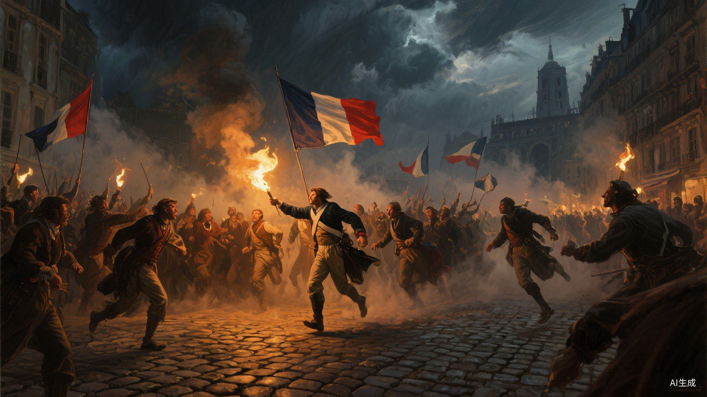
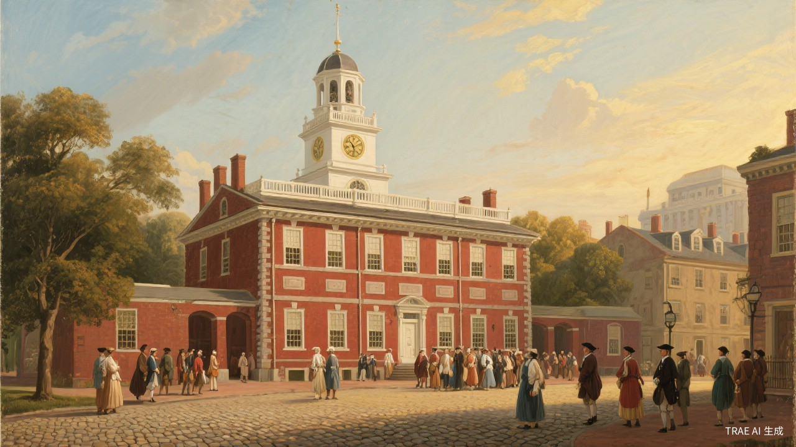
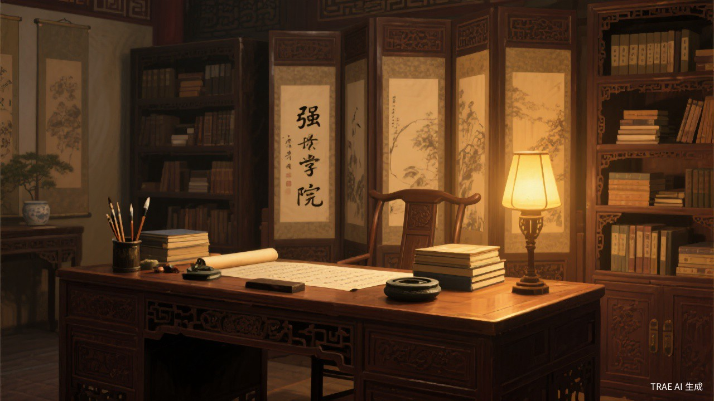
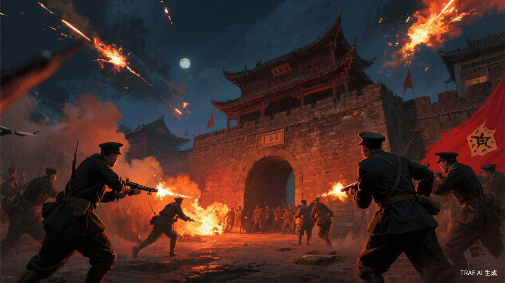

有问题，直接告诉我们
反馈会带上当前页面和剧本上下文，不会上传密码、键盘输入过程或完整本机学习档案。
从已有剧本生成教师导学卡，学生继续体验原剧情与知识测试；结束后再生成基于真实数据的学习复盘。
Mission Progress
已完成：0/5 个剧本




旧剧本在旁路外壳中运行；兼容层负责原创角色替换和匿名互动记录。
反馈会带上当前页面和剧本上下文，不会上传密码、键盘输入过程或完整本机学习档案。
希望先开发哪段历史？哪个功能最需要？许愿进入审核、调研、计划、开发和实现路线图。
进入许愿池